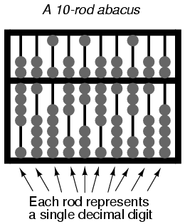

It is imperative to understand that the type of numeration system used to represent numbers has no impact upon the outcome of any arithmetical function (addition, subtraction, multiplication, division, roots, powers, or logarithms). A number is a number is a number; one plus one will always equal two (so long as we're dealing with real numbers), no matter how you symbolize one, one, and two. A prime number in decimal form is still prime if its shown in binary form, or octal, or hexadecimal. π is still the ratio between the circumference and diameter of a circle, no matter what symbol(s) you use to denote its value. The essential functions and interrelations of mathematics are unaffected by the particular system of symbols we might choose to represent quantities. This distinction between numbers and systems of numeration is critical to understand.
The essential distinction between the two is much like that between an object and the spoken word(s) we associate with it. A house is still a house regardless of whether we call it by its English name house or its Spanish name casa. The first is the actual thing, while the second is merely the symbol for the thing.
That being said, performing a simple arithmetic operation such as addition (longhand) in binary form can be confusing to a person accustomed to working with decimal numeration only. In this lesson, we'll explore the techniques used to perform simple arithmetic functions on binary numbers, since these techniques will be employed in the design of electronic circuits to do the same. You might take longhand addition and subtraction for granted, having used a calculator for so long, but deep inside that calculator's circuitry all those operations are performed "longhand," using binary numeration. To understand how that's accomplished, we need to review to the basics of arithmetic.
Adding binary numbers is a very simple task, and very similar to the longhand addition of decimal numbers. As with decimal numbers, you start by adding the bits (digits) one column, or place weight, at a time, from right to left. Unlike decimal addition, there is little to memorize in the way of rules for the addition of binary bits:
0 + 0 = 0 1 + 0 = 1 0 + 1 = 1 1 + 1 = 10 1 + 1 + 1 = 11
Just as with decimal addition, when the sum in one column is a two-bit (two-digit) number, the least significant figure is written as part of the total sum and the most significant figure is "carried" to the next left column. Consider the following examples:
. 11 1 <--- Carry bits -----> 11 . 1001101 1001001 1000111 . + 0010010 + 0011001 + 0010110 . --------- --------- --------- . 1011111 1100010 1011101
The addition problem on the left did not require any bits to be carried, since the sum of bits in each column was either 1 or 0, not 10 or 11. In the other two problems, there definitely were bits to be carried, but the process of addition is still quite simple.
As we'll see later, there are ways that electronic circuits can be built to perform this very task of addition, by representing each bit of each binary number as a voltage signal (either "high," for a 1; or "low" for a 0). This is the very foundation of all the arithmetic which modern digital computers perform.
With addition being easily accomplished, we can perform the operation of subtraction with the same technique simply by making one of the numbers negative. For example, the subtraction problem of 7 - 5 is essentially the same as the addition problem 7 + (-5). Since we already know how to represent positive numbers in binary, all we need to know now is how to represent their negative counterparts and we'll be able to subtract.
Usually we represent a negative decimal number by placing a minus sign directly to the left of the most significant digit, just as in the example above, with -5. However, the whole purpose of using binary notation is for constructing on/off circuits that can represent bit values in terms of voltage (2 alternative values: either "high" or "low"). In this context, we don't have the luxury of a third symbol such as a "minus" sign, since these circuits can only be on or off (two possible states). One solution is to reserve a bit (circuit) that does nothing but represent the mathematical sign:
. 1012 = 510 (positive) . . Extra bit, representing sign (0=positive, 1=negative) . | . 01012 = 510 (positive) . . Extra bit, representing sign (0=positive, 1=negative) . | . 11012 = -510 (negative)
As you can see, we have to be careful when we start using bits for any purpose other than standard place-weighted values. Otherwise, 11012 could be misinterpreted as the number thirteen when in fact we mean to represent negative five. To keep things straight here, we must first decide how many bits are going to be needed to represent the largest numbers we'll be dealing with, and then be sure not to exceed that bit field length in our arithmetic operations. For the above example, I've limited myself to the representation of numbers from negative seven (11112) to positive seven (01112), and no more, by making the fourth bit the "sign" bit. Only by first establishing these limits can I avoid confusion of a negative number with a larger, positive number.
Representing negative five as 11012 is an example of the sign-magnitude system of negative binary numeration. By using the leftmost bit as a sign indicator and not a place-weighted value, I am sacrificing the "pure" form of binary notation for something that gives me a practical advantage: the representation of negative numbers. The leftmost bit is read as the sign, either positive or negative, and the remaining bits are interpreted according to the standard binary notation: left to right, place weights in multiples of two.
As simple as the sign-magnitude approach is, it is not very practical for arithmetic purposes. For instance, how do I add a negative five (11012) to any other number, using the standard technique for binary addition? I'd have to invent a new way of doing addition in order for it to work, and if I do that, I might as well just do the job with longhand subtraction; there's no arithmetical advantage to using negative numbers to perform subtraction through addition if we have to do it with sign-magnitude numeration, and that was our goal!
There's another method for representing negative numbers which works with our familiar technique of longhand addition, and also happens to make more sense from a place-weighted numeration point of view, called complementation. With this strategy, we assign the leftmost bit to serve a special purpose, just as we did with the sign-magnitude approach, defining our number limits just as before. However, this time, the leftmost bit is more than just a sign bit; rather, it possesses a negative place-weight value. For example, a value of negative five would be represented as such:
Extra bit, place weight = negative eight . | . 10112 = 510 (negative) . . (1 x -810) + (0 x 410) + (1 x 210) + (1 x 110) = -510
With the right three bits being able to represent a magnitude from zero through seven, and the leftmost bit representing either zero or negative eight, we can successfully represent any integer number from negative seven (10012 = -810 + 110 = -710) to positive seven (01112 = 010 + 710 = 710).
Representing positive numbers in this scheme (with the fourth bit designated as the negative weight) is no different from that of ordinary binary notation. However, representing negative numbers is not quite as straightforward:
zero 0000 positive one 0001 negative one 1111 positive two 0010 negative two 1110 positive three 0011 negative three 1101 positive four 0100 negative four 1100 positive five 0101 negative five 1011 positive six 0110 negative six 1010 positive seven 0111 negative seven 1001 . negative eight 1000
Note that the negative binary numbers in the right column, being the sum of the right three bits' total plus the negative eight of the leftmost bit, don't "count" in the same progression as the positive binary numbers in the left column. Rather, the right three bits have to be set at the proper value to equal the desired (negative) total when summed with the negative eight place value of the leftmost bit.
Those right three bits are referred to as the two's complement of the corresponding positive number. Consider the following comparison:
positive number two's complement --------------- ---------------- 001 111 010 110 011 101 100 100 101 011 110 010 111 001
In this case, with the negative weight bit being the fourth bit (place value of negative eight), the two's complement for any positive number will be whatever value is needed to add to negative eight to make that positive value's negative equivalent. Thankfully, there's an easy way to figure out the two's complement for any binary number: simply invert all the bits of that number, changing all 1's to 0's and vice versa (to arrive at what is called the one's complement) and then add one! For example, to obtain the two's complement of five (1012), we would first invert all the bits to obtain 0102 (the "one's complement"), then add one to obtain 0112, or -510 in three-bit, two's complement form.
Interestingly enough, generating the two's complement of a binary number works the same if you manipulate all the bits, including the leftmost (sign) bit at the same time as the magnitude bits. Let's try this with the former example, converting a positive five to a negative five, but performing the complementation process on all four bits. We must be sure to include the 0 (positive) sign bit on the original number, five (01012). First, inverting all bits to obtain the one's complement: 10102. Then, adding one, we obtain the final answer: 10112, or -510 expressed in four-bit, two's complement form.
It is critically important to remember that the place of the negative-weight bit must be already determined before any two's complement conversions can be done. If our binary numeration field were such that the eighth bit was designated as the negative-weight bit (100000002), we'd have to determine the two's complement based on all seven of the other bits. Here, the two's complement of five (00001012) would be 11110112. A positive five in this system would be represented as 000001012, and a negative five as 111110112.
We can subtract one binary number from another by using the standard techniques adapted for decimal numbers (subtraction of each bit pair, right to left, "borrowing" as needed from bits to the left). However, if we can leverage the already familiar (and easier) technique of binary addition to subtract, that would be better. As we just learned, we can represent negative binary numbers by using the "two's complement" method and a negative place-weight bit. Here, we'll use those negative binary numbers to subtract through addition. Here's a sample problem:
Subtraction: 710 - 510 Addition equivalent: 710 + (-510)
If all we need to do is represent seven and negative five in binary (two's complemented) form, all we need is three bits plus the negative-weight bit:
positive seven = 01112 negative five = 10112
Now, let's add them together:
. 1111 <--- Carry bits . 0111 . + 1011 . ------ . 10010 . | . Discard extra bit . . Answer = 00102
Since we've already defined our number bit field as three bits plus the negative-weight bit, the fifth bit in the answer (1) will be discarded to give us a result of 00102, or positive two, which is the correct answer.
Another way to understand why we discard that extra bit is to remember that the leftmost bit of the lower number possesses a negative weight, in this case equal to negative eight. When we add these two binary numbers together, what we're actually doing with the MSBs is subtracting the lower number's MSB from the upper number's MSB. In subtraction, one never "carries" a digit or bit on to the next left place-weight.
Let's try another example, this time with larger numbers. If we want to add -2510 to 1810, we must first decide how large our binary bit field must be. To represent the largest (absolute value) number in our problem, which is twenty-five, we need at least five bits, plus a sixth bit for the negative-weight bit. Let's start by representing positive twenty-five, then finding the two's complement and putting it all together into one numeration:
+2510 = 0110012 (showing all six bits) One's complement of 110012 = 1001102 One's complement + 1 = two's complement = 1001112 -2510 = 1001112
Essentially, we're representing negative twenty-five by using the negative-weight (sixth) bit with a value of negative thirty-two, plus positive seven (binary 1112).
Now, let's represent positive eighteen in binary form, showing all six bits:
. 1810 = 0100102 . . Now, let's add them together and see what we get: . . 11 <--- Carry bits . 100111 . + 010010 . -------- . 111001
Since there were no "extra" bits on the left, there are no bits to discard. The leftmost bit on the answer is a 1, which means that the answer is negative, in two's complement form, as it should be. Converting the answer to decimal form by summing all the bits times their respective weight values, we get:
(1 x -3210) + (1 x 1610) + (1 x 810) + (1 x 110) = -710
Indeed -710 is the proper sum of -2510 and 1810.
One caveat with signed binary numbers is that of overflow, where the answer to an addition or subtraction problem exceeds the magnitude which can be represented with the alloted number of bits. Remember that the place of the sign bit is fixed from the beginning of the problem. With the last example problem, we used five binary bits to represent the magnitude of the number, and the left-most (sixth) bit as the negative-weight, or sign, bit. With five bits to represent magnitude, we have a representation range of 25, or thirty-two integer steps from 0 to maximum. This means that we can represent a number as high as +3110 (0111112), or as low as -3210 (1000002). If we set up an addition problem with two binary numbers, the sixth bit used for sign, and the result either exceeds +3110 or is less than -3210, our answer will be incorrect. Let's try adding 1710 and 1910 to see how this overflow condition works for excessive positive numbers:
. 1710 = 100012 1910 = 100112 . . 1 11 <--- Carry bits . (Showing sign bits) 010001 . + 010011 . -------- . 100100
The answer (1001002), interpreted with the sixth bit as the -3210 place, is actually equal to -2810, not +3610 as we should get with +1710 and +1910 added together! Obviously, this is not correct. What went wrong? The answer lies in the restrictions of the six-bit number field within which we're working Since the magnitude of the true and proper sum (3610) exceeds the allowable limit for our designated bit field, we have an overflow error. Simply put, six places doesn't give enough bits to represent the correct sum, so whatever figure we obtain using the strategy of discarding the left-most "carry" bit will be incorrect.
A similar error will occur if we add two negative numbers together to produce a sum that is too low for our six-bit binary field. Let's try adding -1710 and -1910 together to see how this works (or doesn't work, as the case may be!):
. -1710 = 1011112 -1910 = 1011012 . . 1 1111 <--- Carry bits . (Showing sign bits) 101111 . + 101101 . -------- . 1011100 . | . Discard extra bit . FINAL ANSWER: 0111002 = +2810
The (incorrect) answer is a positive twenty-eight. The fact that the real sum of negative seventeen and negative nineteen was too low to be properly represented with a five bit magnitude field and a sixth sign bit is the root cause of this difficulty.
Let's try these two problems again, except this time using the seventh bit for a sign bit, and allowing the use of 6 bits for representing the magnitude:
. 1710 + 1910 (-1710) + (-1910) . . 1 11 11 1111 . 0010001 1101111 . + 0010011 + 1101101 . --------- --------- . 01001002 110111002 . | . Discard extra bit . . ANSWERS: 01001002 = +3610 . 10111002 = -3610
By using bit fields sufficiently large to handle the magnitude of the sums, we arrive at the correct answers.
In these sample problems we've been able to detect overflow errors by performing the addition problems in decimal form and comparing the results with the binary answers. For example, when adding +1710 and +1910 together, we knew that the answer was supposed to be +3610, so when the binary sum checked out to be -2810, we knew that something had to be wrong. Although this is a valid way of detecting overflow, it is not very efficient. After all, the whole idea of complementation is to be able to reliably add binary numbers together and not have to double-check the result by adding the same numbers together in decimal form! This is especially true for the purpose of building electronic circuits to add binary quantities together: the circuit has to be able to check itself for overflow without the supervision of a human being who already knows what the correct answer is.
What we need is a simple error-detection method that doesn't require any additional arithmetic. Perhaps the most elegant solution is to check for the sign of the sum and compare it against the signs of the numbers added. Obviously, two positive numbers added together should give a positive result, and two negative numbers added together should give a negative result. Notice that whenever we had a condition of overflow in the example problems, the sign of the sum was always opposite of the two added numbers: +1710 plus +1910 giving -2810, or -1710 plus -1910 giving +2810. By checking the signs alone we are able to tell that something is wrong.
But what about cases where a positive number is added to a negative number? What sign should the sum be in order to be correct. Or, more precisely, what sign of sum would necessarily indicate an overflow error? The answer to this is equally elegant: there will never be an overflow error when two numbers of opposite signs are added together! The reason for this is apparent when the nature of overflow is considered. Overflow occurs when the magnitude of a number exceeds the range allowed by the size of the bit field. The sum of two identically-signed numbers may very well exceed the range of the bit field of those two numbers, and so in this case overflow is a possibility. However, if a positive number is added to a negative number, the sum will always be closer to zero than either of the two added numbers: its magnitude must be less than the magnitude of either original number, and so overflow is impossible.
Fortunately, this technique of overflow detection is easily implemented in electronic circuitry, and it is a standard feature in digital adder circuits: a subject for a later chapter.
The singular reason for learning and using the binary numeration system in electronics is to understand how to design, build, and troubleshoot circuits that represent and process numerical quantities in digital form. Since the bivalent (two-valued) system of binary bit numeration lends itself so easily to representation by "on" and "off" transistor states (saturation and cutoff, respectively), it makes sense to design and build circuits leveraging this principle to perform binary calculations.
If we were to build a circuit to represent a binary number, we would have to allocate enough transistor circuits to represent as many bits as we desire. In other words, in designing a digital circuit, we must first decide how many bits (maximum) we would like to be able to represent, since each bit requires one on/off circuit to represent it. This is analogous to designing an abacus to digitally represent decimal numbers: we must decide how many digits we wish to handle in this primitive "calculator" device, for each digit requires a separate rod with its own beads.

A ten-rod abacus would be able to represent a ten-digit decimal number, or a maxmium value of 9,999,999,999. If we wished to represent a larger number on this abacus, we would be unable to, unless additional rods could be added to it.
In digital, electronic computer design, it is common to design the system for a common "bit width:" a maximum number of bits allocated to represent numerical quantities. Early digital computers handled bits in groups of four or eight. More modern systems handle numbers in clusters of 32 bits or more. To more conveniently express the "bit width" of such clusters in a digital computer, specific labels were applied to the more common groupings.
Eight bits, grouped together to form a single binary quantity, is known as a byte. Four bits, grouped together as one binary number, is known by the humorous title of nibble, often spelled as nybble.
A multitude of terms have followed byte and nibble for labeling specfiic groupings of binary bits. Most of the terms shown here are informal, and have not been made "authoritative" by any standards group or other sanctioning body. However, their inclusion into this chapter is warranted by their occasional appearance in technical literature, as well as the levity they add to an otherwise dry subject:
The most ambiguous term by far is word, referring to the standard bit-grouping within a particular digital system. For a computer system using a 32 bit-wide "data path," a "word" would mean 32 bits. If the system used 16 bits as the standard grouping for binary quantities, a "word" would mean 16 bits. The terms playte and dynner, by contrast, always refer to 16 and 32 bits, respectively, regardless of the system context in which they are used.
Context dependence is likewise true for derivative terms of word, such as double word and longword (both meaning twice the standard bit-width), half-word (half the standard bit-width), and quad (meaning four times the standard bit-width). One humorous addition to this somewhat boring collection of word-derivatives is the term chawmp, which means the same as half-word. For example, a chawmp would be 16 bits in the context of a 32-bit digital system, and 18 bits in the context of a 36-bit system. Also, the term gawble is sometimes synonymous with word.
Definitions for bit grouping terms were taken from Eric S. Raymond's "Jargon Lexicon," an indexed collection of terms -- both common and obscure -- germane to the world of computer programming.
Lessons In Electric Circuits copyright (C) 2000-2023 Tony R. Kuphaldt, under the terms and conditions of the CC BY License.